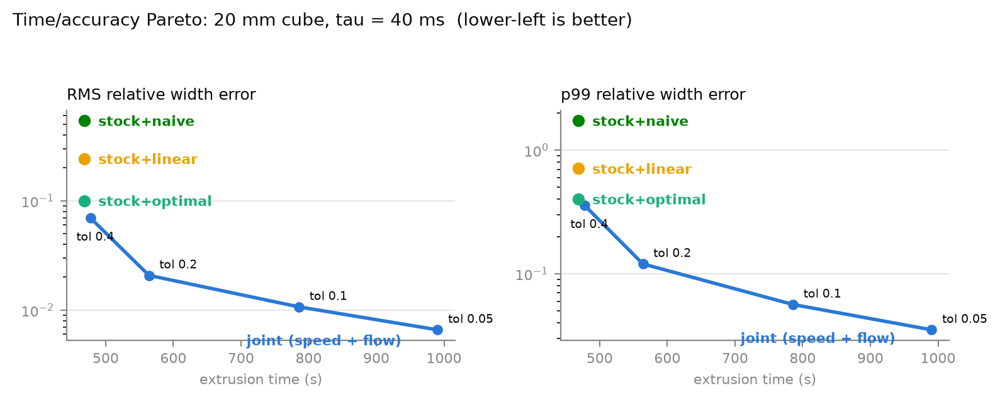
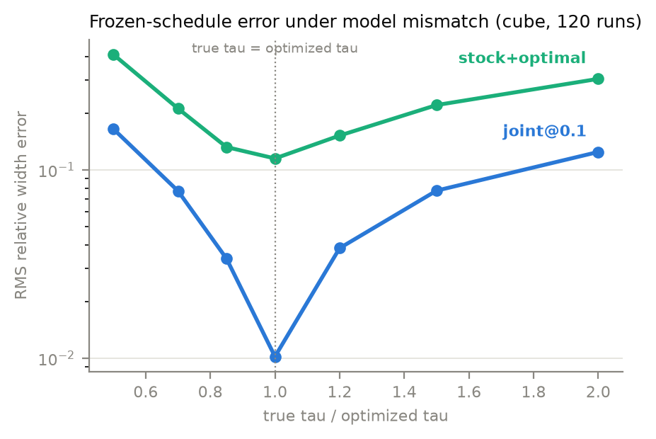

A feedforward reformulation of real-time melt-zone pressure control: since a sliced G-code file is the printer's entire future trajectory, the same pressure-dynamics model and tracking optimization that would normally run online can be solved once, offline, and baked back into ordinary G-code, on a stock, unmodified Bambu Lab X1C.
Filament compresses in the melt zone before it exits the nozzle, so printers systematically under-extrude while accelerating and over-extrude while decelerating. Jake Read's MPC for Additive Extrusion closes a real-time control loop at the motor level to fix this, but that requires firmware access to the motion controller. The X1C's controller is sealed to modification, closing off that route, but a sliced G-code file already specifies the complete future trajectory: the same pressure-dynamics model and tracking optimization Read runs online can instead be solved once, offline, over the whole toolpath, with the optimized result written back as ordinary G-code. Real-time MPC becomes receding-horizon trajectory optimization at slicing time.
A first-order pressure lag model (tau · dq_out/dt + q_out =
q_in, where tau is numerically the Klipper
pressure-advance constant) relates commanded inflow to actual outflow at
the nozzle. Because the X1C's motion planner is a sealed black box, a
second model reconstructs the velocity profile it will actually execute:
trapezoidal moves under an acceleration limit plus square-corner-velocity
junction slowdown, with the printer and planner fit empirically as one
system. A bounded least-squares optimizer then tracks the demanded
outflow through the pressure model in overlapping windows, an MPC
horizon run entirely offline, subject to a maximum volumetric flow limit
and (by default) no negative inflow mid-bead. The post-processor extracts
each continuous extrusion run from sliced G-code, optimizes its inflow,
and re-emits it subdivided into ~4 ms segments whose E values realize
the optimized flow; original vertices are preserved exactly and
everything else passes through byte-for-byte, with an M900
K0 inserted so firmware pressure advance doesn't double-compensate.
A calibration print (first-layer lines with a stepped speed change, run
with firmware flow-dynamics compensation disabled) is scanned on a
flatbed scanner and measured for line width every 1–2 mm; a
least-squares fit against the measured widths recovers tau
for the specific filament and printer. Compensated prints then run with
that tau and firmware compensation held off, so the offline
optimization is the only source of correction.


Jointly optimizing the feedrate profile and the inflow schedule
dominates speed-agnostic compensation on the time/accuracy Pareto front:
at matched extrusion time it reaches roughly an order of magnitude lower
relative width error than the stock-speed, optimal-inflow baseline, and
that advantage holds under Monte Carlo perturbation of the true
tau away from its fitted value, evidence the joint schedule
isn't simply overfitting to a single calibration point. The research
track this feeds, flow-limited time-optimal feedrate scheduling, treats
the feedrate profile itself as a variable rather than something the
slicer fixes before compensation ever runs.
The planner model is approximate (input shaping and S-curve blending are ignored, so accel/junction parameters need empirical tuning), arcs and Z-changing moves pass through uncompensated, and the model is linear first-order only; a learned residual for nonlinear (shear-thinning) outflow is the natural next step. A phase-2 direction uses the printer's toolhead camera for per-layer measurement and iterative between-layer re-optimization, a layer-timescale analog of Read's online recompile, without any hardware or firmware modification.